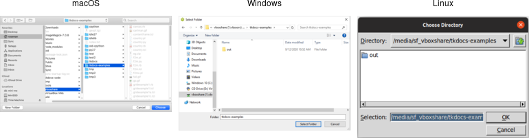
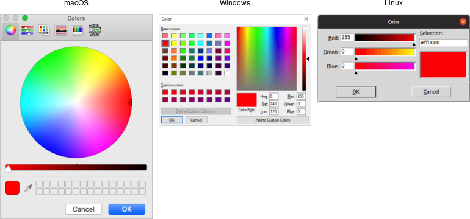
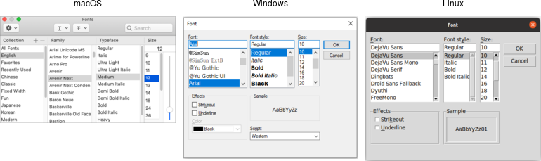
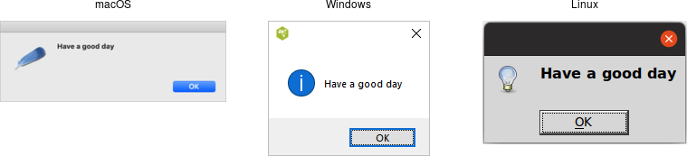
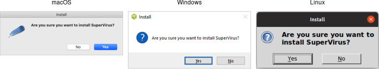

Windows and Dialogs
Everything we've done up until now has been in a single window. In this chapter, we'll cover how to use multiple windows, changing various attributes of windows, and use some of the standard dialog boxes that are available in Tk.
Creating and Destroying Windows
We've seen that all Tk programs start out with a root toplevel window, and then widgets are created as children of that root window. Creating new toplevel windows works almost exactly the same as creating new widgets.
Toplevel windows are created using the Toplevel class:
t = Toplevel(parent)
Note: Toplevels are part of the classic Tk widgets, not the themed widgets.
Unlike regular widgets, we don't have to grid a toplevel for it to appear onscreen.
Once we've created a new toplevel, we can create other widgets as children of that toplevel, and grid them inside the toplevel.
The new toplevel behaves exactly like the automatically created root window.
To destroy a window, use its destroy method:
window.destroy()
Note that you can use destroy on any widget, not just a toplevel window. When you destroy a window, all windows (widgets) that
are children of that window are also destroyed. Be careful! If you destroy the root window
(that all other widgets are descended from), that will terminate your application.
In a typical document-oriented application, we want to be able to close any windows while leaving the others open.
In that case, we may want to create a new toplevel for every window, and not put anything directly inside the root window at all.
While we can't just destroy the root window, we can remove it entirely from the screen using its withdraw method, which
we'll see shortly.
Window Behavior and Styles
There are lots of things about how windows behave and how they look that can be changed.
Window Title
To examine or change the title of the window:
oldtitle = window.title()
window.title('New title')
Size and Location
In Tk, a window's position and size on the screen are known as its geometry. A full geometry specification
looks like this: widthxheight±x±y.
Width and height (usually in pixels) are pretty self-explanatory. The x (horizontal position) is specified with
a leading plus or minus, so +25 means the left edge of the window should be 25 pixels from the left edge
of the screen, while -50 means the right edge of the window should be 50 pixels from the right edge of
the screen. Similarly, a y (vertical) position of +10 means the top edge of the window should be ten pixels
below the top of the screen, while -100 means the bottom edge of the window should be 100 pixels above the bottom of
the screen.
Geometry specifies the actual coordinates on the screen. It doesn't make allowances for
systems like macOS with a menubar along the top or a dock along the bottom. So specifying a
position of +0+0 would actually place the top part of the window under the system menu bar. It's a good idea
to leave a healthy margin (at least 30 pixels) from the screen's edge.
Screen positions can be different than you might expect when you have multiple monitors on your system. We'll cover that shortly.
Here is an example of changing the size and position. It places the window towards the top righthand corner of the screen:
window.geometry('300x200-5+40')You can retrieve the current geometry the same way; just don't provide a new geometry value. However, if you try it immediately after changing the geometry, you'll find it doesn't match. Remember that all drawing effectively occurs in the background, in response to idle times via the event loop. Until that drawing occurs, the internal geometry of the window won't be updated. If you do want to force things to update immediately, you can.
window.update_idletasks() print(window.geometry())
We've seen that the window defaults to the size requested by the widgets that are gridded into it.
If we're creating and adding new widgets interactively in the interpreter, or if our program adds new widgets
in response to other events, the window size adjusts. This behavior continues until either we explicitly provide
the window's geometry as above or a user resizes the window. At that point, even if we add more widgets,
the window won't change size. You'll want to be sure you're using all of grid's features
(e.g., sticky, weight) to make everything fit nicely.
Resizing Behavior
By default, toplevel windows, including the root window, can be resized by users.
However, sometimes you may want to prevent users from resizing the window.
You can do this via the resizable method. It's first parameter controls whether users can change the
width, and the second if they can change the height. So to disable all resizing:
window.resizable(FALSE,FALSE)
If a window is resizable, you can specify a minimum and/or maximum size that you'd like the window's size constrained to (again, parameters are width and height):
window.minsize(200,100) window.maxsize(500,500)
You saw earlier how to obtain the current size of the window via its geometry. Wondering how large it would be if you didn't specify its geometry, or a user didn't resize it? You can retrieve the window's requested size, i.e., how much space it requests from the geometry manager. Like with drawing, geometry calculations are only done at idle time in the event loop, so you won't get a useful response until the widget has appeared onscreen.
window.winfo_reqwidth() # or winfo_reqheight
You can use the reqwidth and reqheight methods on any widget, not just toplevel windows.
There are other winfo methods you can call on any widget, such as width and height,
to get the actual (not requested) width and height. For more, see the winfo command reference.
Intercepting the Close Button
Most windows have a close button in their title bar. By default, Tk will destroy the window if users click on that button. You can, however, provide a callback that will be run instead. A common use is to prompt the user to save an open file if modifications have been made.
window.protocol("WM_DELETE_WINDOW", callback)The somewhat obscurely-named WM_DELETE_PROTOCOL originated with X11 window manager protocols.
Transparency
Windows can be made partially transparent by specifying an alpha channel, ranging from 0.0 (fully transparent) to 1.0 (fully opqaque).
window.attributes("-alpha", 0.5)
Tkinter's wrapper to the underlying wm attributes command doesn't do any interpretation of options, handle keyword arguments, etc.
On macOS, you can additionally specify a -transparent attribute (using the same mechanism as with -alpha),
which allows you to make the background of the window transparent, and remove the window's
show. You should also set the background configuration option for the window and any frames to the color ssytemTransparent.
Full Screen
You can make a window expand to take up the full screen:
window.attributes("-fullscreen", 1)Iconifying and Withdrawing
On most systems, you can temporarily remove the window from the screen by iconifying it. In Tk, whether
or not a window is iconified is referred to as the window's state. The possible states for a
window include normal and iconic (for an iconified window), and several
others: withdrawn, icon or zoomed.
You can query or set the current window state directly. There are also methods iconify,
deiconify, and withdraw, which are shortcuts for setting the iconic, normal,
and withdrawn states, respectively.
thestate = window.state()
window.state('normal')
window.iconify()
window.deiconify()
window.withdraw()For document-centric applications, where you want to allow closing any window without the application exiting
(as would happen if you destroy the root window), use withdraw on the root window to remove it from
the screen, use new toplevel windows for your user interface.
Stacking Order
Stacking order refers to the order that windows are "placed" on the screen, from bottom to top. When the positions of two windows overlap each other, the one closer to the top of the stacking order will obscure or overlap the one lower in the stacking order.
You can ensure that a window is always at the top of the stacking order (or at least above all others where this attribute isn't set):
window.attributes("-topmost", 1)You can find the current stacking order, listed from lowest to highest:
root.tk.eval('wm stackorder '+str(window))This method isn't exposed cleanly in Tkinter. It returns the internal names of each window, not the window object.
You can also just check if one window is above or below another:
if (root.tk.eval('wm stackorder '+str(window)+' isabove '+str(otherwindow))=='1') ...
if (root.tk.eval('wm stackorder '+str(window)+' isbelow '+str(otherwindow))=='1') ...You can also raise or lower windows, either to the very top (bottom) of the stacking order, or just above (below) a designated window:
window.lift() window.lift(otherwin) window.lower() window.lower(otherwin)
Tkinter uses the name lift since raise is a reserved keyword in Python.
Why do you need to pass a window to get the stacking order? Stacking order applies not only for toplevel windows, but for any sibling widgets (those with the same parent). If you have several widgets gridded together but overlapping, you can raise and lower them relative to each other:
from tkinter import * from tkinter import ttk root = Tk() little = ttk.Label(root, text="Little") bigger = ttk.Label(root, text='Much bigger label') little.grid(column=0,row=0) bigger.grid(column=0,row=0) root.after(2000, lambda: little.lift()) root.mainloop()
This uses timer events, which we covered in the event loop chapter.
The after command schedules a script to run at a certain number of
milliseconds in the future, but leaves the event loop to continue.
Screen Information
We've previously used the winfo command to find out information about specific widgets. It can also provide information about the
entire display or screen. As usual, see the winfo command reference
for full details.
For example, you can determine the screen's color depth (how many bits per pixel) and color model (usually truecolor on modern displays),
it's pixel density, and resolution.
print("color depth=" + str(root.winfo_screendepth())+ " (" + root.winfo_screenvisual() + ")")
print("pixels per inch=" + str(root.winfo_pixels('1i')))
print("width=", str(root.winfo_screenwidth()) + " height=", str(root.winfo_screenheight()))
Multiple Monitors
While normally you shouldn't have to pay attention to it, if you do have multiple monitors on your system and want to customize things a bit, there are some tools in Tk to help.
First, there are two ways that multiple monitors can be represented. The first is with logically separate displays. This is often the
case on X11 systems, though it can be changed, e.g., using the xrandr system utility. A downside of this model is that once a
window is created on a screen, it can't be moved to a different one. You can determine the screen that a Tk
window is running on, which looks something like :0.0 (an X11-formatted display name).
root.winfo_screen()
When first creating a toplevel you can specify the screen it should be created on using the screen configuration option.
Different monitors may have different resolutions, color depths, etc. You'll notice that all the screen information calls we just covered are methods invoked on a specific widget. They will return information about whatever screen that window is located on.
Alternatively, multiple monitors can also be represented as one big virtual display, which is the case on macOS and Windows. When you ask for information about the screen, Tk will return information on the primary monitor. For example, if you have two Full HD monitors side-by-side, the screen resolution will be reported as 1920 x 1080, not 3840 x 1080. This is probably a good thing; it means that if we're positioning or sizing windows, we don't need to worry about multiple monitors, and everything will just show up correctly on the primary monitor.
What if a user moves a window from the primary monitor to a different one? If you ask for its position, it will be relative to the primary monitor.
So in our side-by-side FHD monitor setup, if you call the winfo_x method on a window positioned near the left edge of a monitor, it
might return 100 (if it's on the primary monitor), -1820 (if it's on a monitor to the left of the primary monitor),
or 2020 (if it's on a monitor to the right of the primary monitor). You can still use the geometry method we saw
a bit earlier to position the window on a different monitor, even though the geometry specification may look a bit odd,
e.g., +-1820+100.
You can find out approximately how large the entire display is, spanning multiple monitors. To do so, check a toplevel widget's maximum size, i.e., how large the user can resize it (you can't do this after you've already changed it, of course). This may be a bit smaller than the full size of the display. For example, on macOS, it will be reduced by the size of the menubar at the top of the screen.
root.wm_maxsize()
Dialog Windows
Dialog boxes are a type of window used in applications to get some information from users, inform them that some event has occurred, confirm an action, and more. The appearance and usage of dialog boxes are usually quite specifically detailed in a platform's style guide. Tk comes with several dialog boxes built-in for common tasks. These help you conform to platform-specific style guidelines.
Selecting Files and Directories
Tk provides several dialogs to let users select files or directories. On Windows and macOS,
these invoke the underlying operating system dialogs directly. The "open" variant on the
dialog is used when you want users to select an existing file (like in a "File | Open..."
menu command), while the "save" variant is used to choose a file to save into (usually used
by the "File | Save As..." menu command).
from tkinter import filedialog filename = filedialog.askopenfilename() filename = filedialog.asksaveasfilename() dirname = filedialog.askdirectory()
All of these commands produce modal dialogs. This means that the commands will not complete until a user submits the dialog. These commands return the full pathname of the file or directory a user has chosen, or an empty string if a user cancels out of the dialog.

Open file dialogs.

Save file dialogs.

Choose directory dialogs.
Various options can be passed to these dialogs, allowing you to set the
allowable file types, initial directory, default filename, and many more. These are detailed
in the getOpenFile (includes getSaveFile) and
chooseDirectory reference manual pages.
Selecting Colors
Another modal dialog lets users select a color. It will return a color value, e.g. #ff62b8.
The dialog takes an optional initialcolor option to specify an existing color, i.e., that users
might want to replace. More information is available in the
chooseColor reference manual pages.
from tkinter import colorchooser colorchooser.askcolor(initialcolor='#ff0000')

Choose color dialogs.
Selecting Fonts
Tk 8.6 added support for another system dialog: a font chooser. While the file dialogs and color chooser were modal dialogs, that block until the dialog is dismissed and then return a result, the font chooser doesn't work like that.
As the font chooser isn't available in Tk 8.5, if your code needs to support older Tk versions, you'll need to take that into account.

Font chooser dialogs.
While the system font dialog is modal on some platforms, e.g., Windows, that's not the case everywhere. On macOS, the system font chooser works more like a floating tool palette in a drawing program, remaining available to change the font for whatever text is selected in your main application window. The Tk font dialog API has to accommodate both models. To do so, it uses callbacks (and virtual events) to notify your application of font changes. Additional details can be found in the fontchooser reference manual pages.
To use the font dialog, first provide it with an initial font and a callback which will be invoked when a font is chosen. For illustration, we'll have the callback change the font on a label.
l = ttk.Label(root, text="Hello World", font="helvetica 24")
l.grid(padx=10, pady=10)
def font_changed(font):
l['font'] = font
root.tk.call('tk', 'fontchooser', 'configure', '-font', 'helvetica 24', '-command', root.register(font_changed))
root.tk.call('tk', 'fontchooser', 'show')
Tkinter has not yet added a convenient way to use this new dialog, so this example code uses the Tcl API directly. You can see the latest work towards a proper Python API and download code at [Issue#28694].
You can query or change the font that is (or will be) displayed in the dialog at any time.
Next, put the dialog onscreen via the show method. On platforms where the font dialog is modal, your program will block at this point until the dialog is
dismissed. On other platforms, show returns immediately; the dialog remains onscreen while your program continues. At this point, a font has not been chosen.
There's also a hide method to remove it from the screen (not terribly useful when the font dialog is modal).
root.tk.call('tk', 'fontchooser', 'show')
root.tk.call('tk', 'fontchooser', 'hide')
If the font dialog was modal, and the user chose a font, the dialog would have invoked your callback, passing it a font specification. If they cancelled out of the
dialog, there'd be no callback. When the dialog isn't modal, and the user chooses a font, it will invoke your callback. A <<TkFontchooserFontChanged>>
virtual event is also generated; you can retrieve the current font via the dialog's font configuration option. If the font dialog is closed,
a <<TkFontchooserVisibility>> virtual event is generated. You can also find out if the font dialog is currently visible onscreen via the
visible configuration option (though changing it is an error; use the show and hide methods instead).
Because of the significant differences between them, providing a good user experience on all platforms takes a bit of work. On platforms where the
font dialog is modal,it's likely to be invoked from a button or menu item that says, e.g., Font.... On other platforms, the button or menu
item should toggle between Show Fonts and Hide Fonts.
If you have several text widgets in your application that can be given
different fonts, when one of them gains focus, it should update the font chooser with its current font. This also means that a callback from the font
dialog may apply to a different text widget than the one you initially called show from! Finally, be aware that the font chooser itself may
gain the keyboard focus on some platforms.
As of Tk 8.6.10, there are a few bugs in the font chooser on various platforms. Here's a quick rundown including workarounds:
- on macOS, if you don't provide a font via the
fontconfiguration option, your callbacks won't be invoked ⇒ always provide an initial font - on X11, if you don't provide values for all configuration options, those you don't include will be reset to their default values ⇒ whenever you change any option, change all of them, even if it's just to their current value
- on X11, the font dialog includes an
Applybutton when you provide a callback, but omits it when you don't (and just watch for virtual events); however, other bugs mean those virtual events are never generated ⇒ always provide a command callback - on Windows, you can also leave off the
Applybutton by not providing a callback; while virtual events are generated on font changes, thefontconfiguration option is never updated ⇒ always provide a command callback, and hold onto the font yourself, rather than trying to ask the font dialog for it later - on Windows, a font change virtual event is not generated if you change the
fontconfiguration option in your code, though it is on macOS and X11 ⇒ take any necessary actions when you change the font in your code rather than in a virtual event handler
Because of the differences between platforms and the various bugs, testing is far more important when using the font chooser than the other system dialogs.
Alert and Confirmation Dialogs
Many applications use various simple modal alerts or dialogs to notify users of an event, ask them to confirm an action, or make another similar choice via clicking on a button. Tk provides a versatile "message box" that encapsulates all these different types of dialogs.
from tkinter import messagebox messagebox.showinfo(message='Have a good day')

Simple message boxes.
messagebox.askyesno( message='Are you sure you want to install SuperVirus?' icon='question' title='Install')

Example message boxes.
Like the previous dialogs that we've seen, these are modal and return the result of a user's
action to the caller. The exact return value will depend on the type option passed to
the command, as shown here:
ok (default):- ⇒
ok okcancel:- ⇒
okorcancel yesno:- ⇒
yesorno yesnocancel:- ⇒
yes,noorcancel retrycancel:- ⇒
retryorcancel abortretryignore:- ⇒
abort,retryorignore
Rather than using a type option, Tkinter uses a different method name for each type of dialog.
The return values vary with the method:
showinfo:- ⇒
"ok" showwarning:- ⇒
"ok" showerror:- ⇒
"ok" askokcancel:- ⇒
True(on ok) orFalse(on cancel) askyesno:- ⇒
True(on yes) orFalse(on no) askretrycancel:- ⇒
True(on retry) orFalse(on cancel) askquestion:- ⇒
"yes"or"no" askyesnocancel:- ⇒
True(on yes),False(on no), orNone(on cancel)
Admittedly, the Tkinter messagebox API isn't the most consistent. It mixes return types (strings or booleans),
there is some duplication (askyesno and askquestion), and one underlying dialog
type (abortretryignore) is omitted.
The full list of possible options is shown here:
type:- As described above.
message:- The main message displayed inside the alert.
detail:- A secondary message (if needed).
title:- Title for the dialog window. Not used on macOS.
icon:- Icon, one of
info(default),error,questionorwarning. default:- Default button, e.g.
okorcancelfor aokcanceldialog. parent:- Window of your application this dialog is being posted for.
Additional details can be found in the reference manual.
Rolling Your Own
If you need to create your own modal dialogs, there are a few things you'll need to take care of. We've covered most of them earlier in the chapter, e.g. setting up window styles, positioning the window, etc.
First, you need to ensure that users can only interact with your dialog. You can use grab_set to do this.
If you want your dialog function to block your application (i.e., the call to create the dialog shouldn't return until the dialog is dismissed), this is also possible. There's no reason you'd need to do this, as you can respond to callbacks, event bindings, etc. while running the normal event loop, destroy the dialog and move on.
This somewhat cryptic example includes the main steps needed to create a modal dialog.
ttk.Entry(root).grid() # something to interact with
def dismiss ():
dlg.grab_release()
dlg.destroy()
dlg = Toplevel(root)
ttk.Button(dlg, text="Done", command=dismiss).grid()
dlg.protocol("WM_DELETE_WINDOW", dismiss) # intercept close button
dlg.transient(root) # dialog window is related to main
dlg.wait_visibility() # can't grab until window appears, so we wait
dlg.grab_set() # ensure all input goes to our window
dlg.wait_window() # block until window is destroyedApplication code blocking like this is an example of running a nested event loop that we generally recommend against, though it may be more convenient in certain circumstances.
Tkinter's standard library includes a simpledialog module that helps with building your own
dialogs. Because it uses the classic Tk widgets rather than the newer themed widgets, we don't recommend using it
directly. However, it does illustrate how to use some of the techniques for making dialogs behave that we just covered.